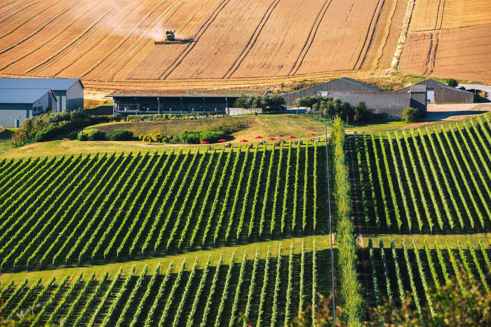
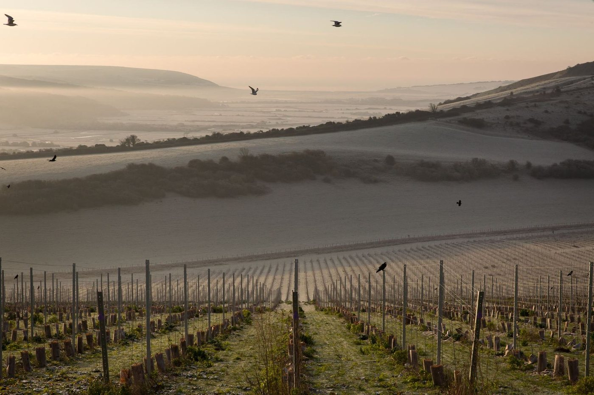
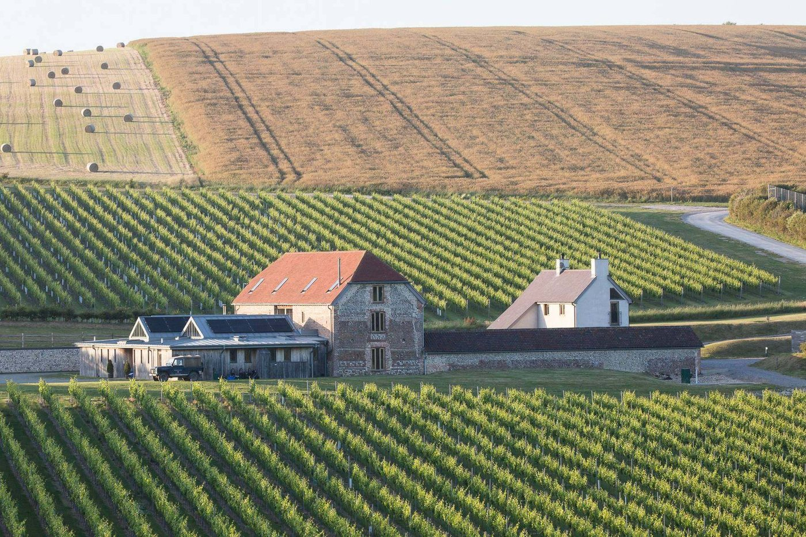
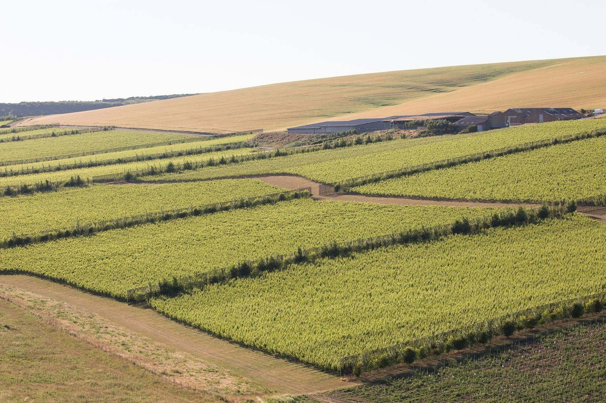
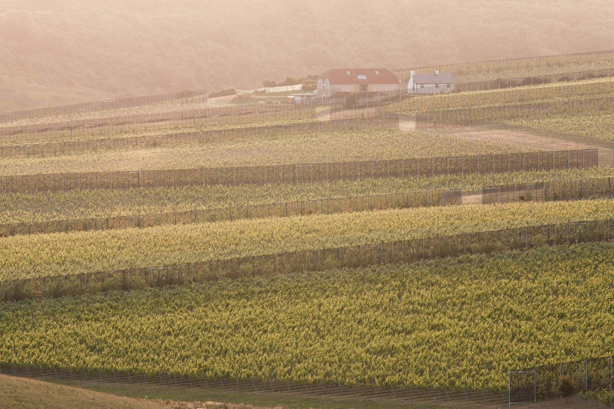

The Wealden Wine Trail
Rathfinny Wine Estate
A sweeping South Downs estate that works as a full wine weekend or an easy drop-in: tasting, food, Flint Barns and a free walk through the vines.






The visit
Rathfinny works both as a booked wine experience and as a relaxed South Downs stop, with informal tastings, food and a free walking route.
Tours Thursday–Sunday
Guided tours run Thursday–Sunday in summer. A six-wine Tasting Experience without the tour is available Friday–Sunday.
Cellar Door and The Hut
Guests can turn up for a short informal Cellar Door tasting. The al fresco Hut serves deli items, wines and hot and soft drinks.
The 5km walking route
Collect a map from the Cellar Door and walk the vineyard route without booking a tour. Dogs are welcome on leads.
Use Seaford when travelling from Brighton or Berwick and Lewes when coming from London. Both are around a 12-minute taxi.
Common questions
Can you turn up at Rathfinny without booking?
Yes. Guests can drop into the Cellar Door for a short informal tasting, and The Hut serves deli items, wine and hot and soft drinks outside. Tours should be booked.
When do Rathfinny tours run in summer?
Summer tours run Thursday–Sunday. A six-wine Tasting Experience without a tour is also available Friday–Sunday.
Are dogs welcome at Rathfinny?
Dogs are welcome in the restaurants and accommodation but, for hygiene reasons, not on vineyard tours. Dogs are welcome on the free walking route when kept on leads.
Can children join a Rathfinny tour?
The estate does not recommend tours for under-18s, but they will not be turned away and a soft drink is provided instead.
Is Rathfinny wheelchair accessible?
Yes. The estate asks guests to flag any mobility requirements during booking so the team can prepare for the visit.
Can you walk around Rathfinny without a tour?
Yes. A free 5km walking route can be collected from the Cellar Door. Dogs are welcome on leads.
Which station is best for Rathfinny?
Seaford is useful from Brighton or Berwick; Lewes is generally better from London. Both are about a 12-minute taxi ride from the estate.
At a glance
- Where
- Alfriston / Seaford, East Sussex
- Summer tours
- Thursday–Sunday
- Tasting Experience
- Friday–Sunday
- Turn-up tasting
- Cellar Door
- Food on site
- Restaurants plus The Hut
- Stay on site
- Flint Barns
- Dogs
- Restaurants, accommodation and trail; not tours
- Families
- Under-18s not recommended on tours
- Accessibility
- Wheelchair accessible; flag needs when booking
- Free walk
- 5km route; map from Cellar Door
- Nearest stations
- Seaford or Lewes (about 12 min taxi)
Also on the Wealden Wine Trail
- Bluebell Vineyard Estate Furners Green / Uckfield
- Beacon Down Vineyard Heathfield
- Coes Farm Rotherfield
- Mousehall Distillery & Vineyard Wadhurst / Crowborough